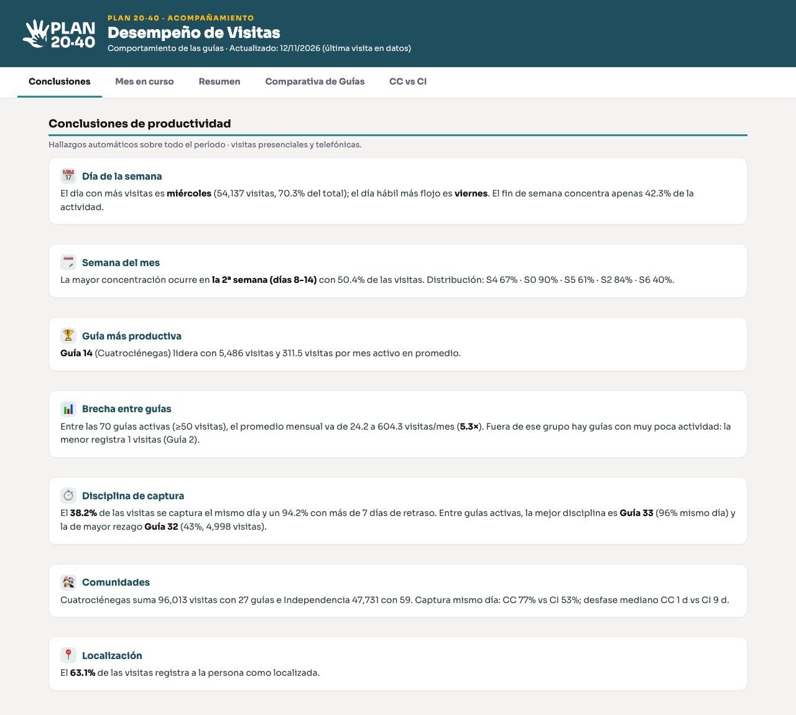
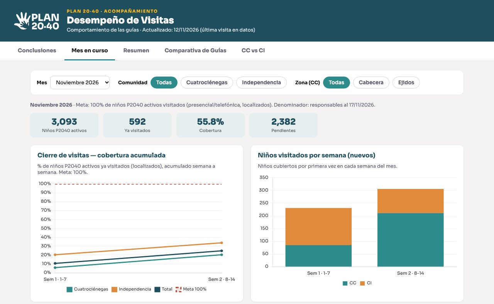
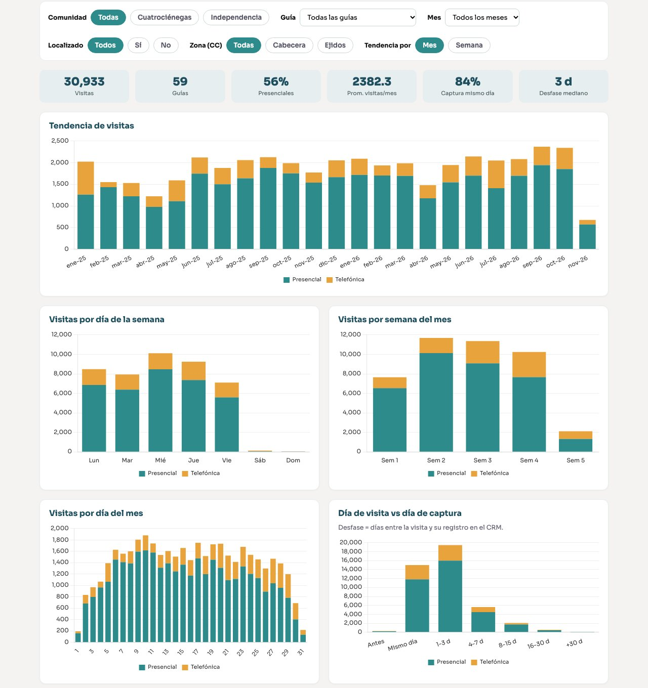
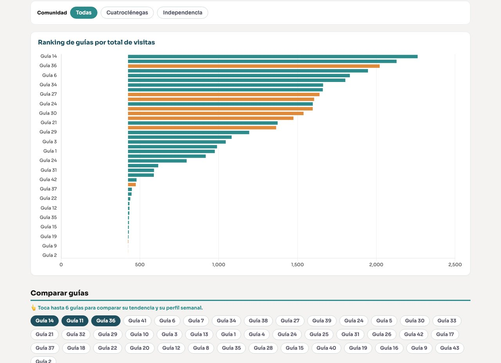
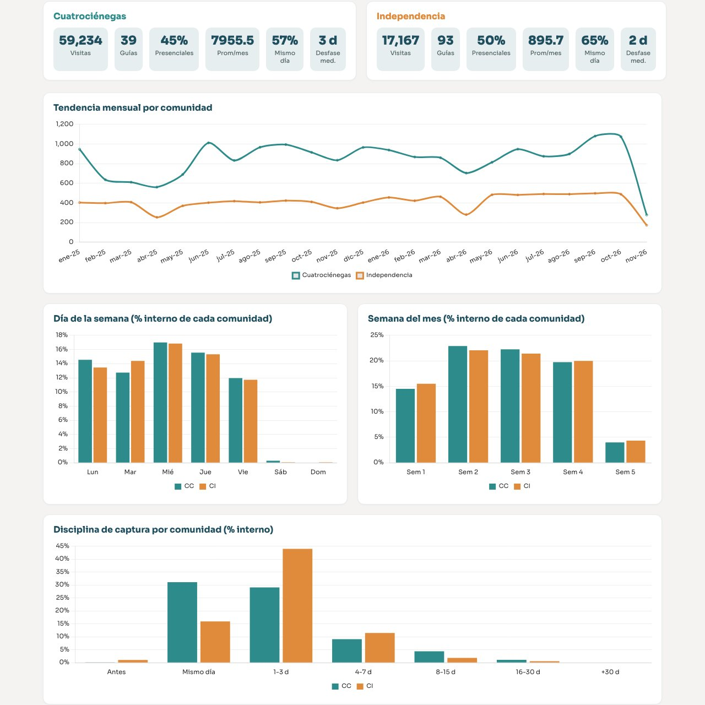

Manual del Desempeño de Visitas
Cómo trabajan las guías: cuántas visitas hacen, cuándo, qué tan rápido las registran y cómo se comparan las comunidades.
1¿Para qué sirve?
Muestra cómo trabajan las guías: cuántas visitas hacen, qué días y semanas, qué tan rápido las registran en el CRM y cómo se comparan las dos comunidades. Sirve para planear la operación (qué días rinden más, dónde hay rezago de captura) y para dar seguimiento al cierre de visitas del mes.
Cuenta solo visitas presenciales y telefónicas, desde enero de 2025 hasta el último dato disponible.
2¿De dónde viene la información?
3Las medidas clave
| Medida | Qué quiere decir |
|---|---|
| Visitas | Número de visitas presenciales y telefónicas registradas en el periodo y con los filtros elegidos. |
| Presenciales | Qué parte de esas visitas fue en persona (el resto son telefónicas). |
| Prom. visitas/mes | Visitas promedio por mes en que la guía tuvo actividad. |
| Captura mismo día | Porcentaje de visitas que se registraron en el CRM el mismo día en que se hicieron. |
| Desfase mediano | Los días que normalmente pasan entre la visita y su registro. La mitad de las visitas se captura en ese tiempo o menos. |
| Cobertura | En «Mes en curso»: porcentaje de niños P2040 activos que ya tuvieron una visita localizada en el mes. La meta es 100 %. |
4Recorrido por pestañas
Da clic en una pestaña para ver qué responde y qué mirar primero.
Conclusionesa fondo¿Qué dice el reporte, en palabras?

- Hallazgos escritos solos, sobre todo el periodo: el día y la semana del mes con más visitas, la guía más productiva, la brecha entre guías, la disciplina de captura, la comparación entre comunidades y qué parte de las visitas encontró a la persona (localización).
- Es la pestaña para leer primero y llevar a una reunión.
Mes en cursoa fondo¿Cuántos niños llevamos visitados este mes?

- Arriba eliges mes, comunidad y, en Cuatro Ciénegas, zona (cabecera o ejidos).
- Cuatro números: niños P2040 activos, ya visitados, cobertura y pendientes. Cuenta las visitas presenciales y telefónicas en las que se localizó a la persona.
- Cierre de visitas: la cobertura acumulada semana a semana, por comunidad, contra la meta del 100 %.
- Niños visitados por semana: cuántos niños se cubrieron por primera vez en cada semana del mes.
- Más abajo, Avance por guía: una barra por guía (verde, visitados; gris, pendientes), con las de menor avance primero.
Resumena fondo¿Cuándo se visita más y qué tan rápido se captura?

- Filtros: comunidad, guía, mes, si la persona fue localizada, zona y si la tendencia va por mes o por semana.
- Tendencia de visitas, presenciales y telefónicas.
- Por día de la semana, por semana del mes y por día del mes: para ver en qué momentos se concentra el trabajo.
- Día de visita vs día de captura: cuántas visitas se registraron el mismo día, a 1–3 días, a 4–7 días, y así.
Comparativa de Guías¿Cómo se compara cada guía con las demás?

- Ranking de guías por total de visitas, con el color de su comunidad.
- Comparar guías: toca hasta 6 nombres para ver su tendencia mensual y en qué días de la semana visitan.
- Productividad vs disciplina de captura: cada burbuja es una guía; más a la derecha, más visitas por mes; más arriba, más visitas capturadas el mismo día.
CC vs CI¿Cómo se comparan Cuatro Ciénegas e Independencia?

- Los números clave de cada comunidad, uno al lado del otro.
- La tendencia mensual de cada una y, en porcentaje interno de cada comunidad, el día de la semana, la semana del mes y la disciplina de captura.
5Preguntas frecuentes
¿Por qué una guía aparece dos veces?
Porque su nombre está escrito de dos formas en el CRM (con o sin acento, o con mayúsculas). Suma las dos y avísale a Análisis para unificarlo.
¿Por qué no coincide con el Reporte Mensual?
Este reporte cuenta visitas (una familia visitada dos veces son dos visitas) y, en Mes en curso, usa como base a todos los niños activos. El Mensual cuenta niños y no incluye a los bimestrales que no tocaban ese mes.
¿Entran los registros de nacido o los seguimientos?
No: este reporte solo cuenta visitas presenciales y telefónicas.